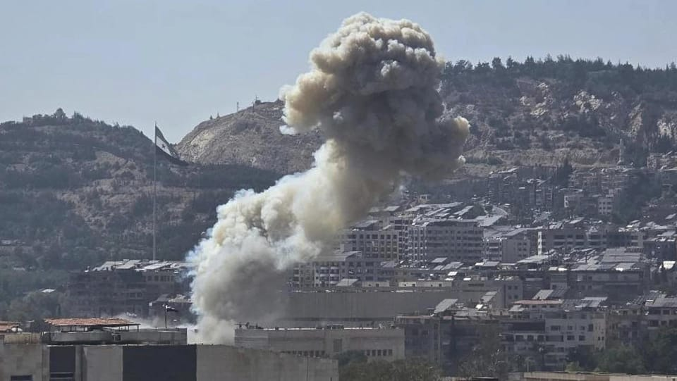

世界苦茶07月17日新闻 | 32条 | 日本药企员工因间谍罪获刑三年半

日本药企员工因间谍罪获刑三年半 | 皮尤发现全球对中国看法改善 | 华为重夺中国手机市场冠军 | 以色列为德鲁兹派系空袭叙利亚
今日三条新闻分析
苦茶数据
美元兑人民币：7.18（昨日7.18，前日7.17）
美元兑日元：148.49（昨日148.88，前日147.62）
上证指数：3506（昨日3498，前日3501）
标普500指数：6263（昨日6243，前日6268）
比特币：118435（昨日117459，前日117023）
布伦特原油：68.78（昨日68.89，前日69.04）
中国新闻
• 聘菲律宾博士引发质疑 ：中国山东一所医院聘请两名菲律宾永恒大学博士研究生担任管理职务，引发网民质疑学校是否存在“因人设岗”等问题。当地卫健委称，相关部门已就此事进行调查。综合澎湃新闻和观察者网报道，山东省聊城市人民医院在官网发布的一则公示显示，该院拟聘用两名菲律宾永恒大学博士研究生担任管理岗位，考察体检已经合格，两人的专业分别为工商管理和英语。除上述两人外，其余拟聘用的博士研究生来自山东大学临床医学和山东中医药大学中西医结合基础。
• 李希强调科研反腐重点 ：中共中央纪委书记李希在一场集体学习活动上说，要强化正风肃纪反腐，盯住科研项目评审验收、经费管理、授牌奖励等风险点，严肃查处利用项目管理权搞权钱交易、内外勾结套取科研经费等腐败问题。据中央纪委国家监委网站消息，二十届中央纪委常委会星期二就“推动科技创新和产业创新融合发展，加快发展人工智能，为高质量发展提供新动能”举行集体学习，李希主持会议并讲话。李希说，面对新一轮科技革命和产业变革深入发展，必须始终坚定拥护“两个确立”、坚决做到“两个维护”，切实把思想和行动统一到中共总书记习近平和党中央决策部署上来，确保科技事业发展始终沿着正确方向前进。
• 中方抗议日本防卫白皮书内容 ：中国指日本《防卫白皮书》是给自身军事松绑找借口，渲染“中国威胁”干涉中国内政，已向日本提出严正交涉。中国国防部新闻局副局长、国防部新闻发言人蒋斌星期三答记者问时说，中国对日本公布的2025年版《防卫白皮书》强烈不满、坚决反对。蒋斌称，日本军国主义曾给中国和亚洲邻国带来深重灾难；日本非但不认真反省，反而再次表现出强军扩武的危险态势，大幅增加防卫预算，不断放宽武器出口限制等，严重违背日本“和平宪法”和“专守防卫”原则，已引起亚洲邻国和国际社会警惕和担忧。
• 中菲南海执法对峙升级 ：中国公布视频，称菲律宾船只危险抵近中国海警，无视国际规则，将迫使中方进一步加大在南中国海的维权执法力度。中国央视新闻新媒体专栏“玉渊谭天”星期三独家公布资料，指菲律宾海警9701船在中国黄岩岛附近海域活动，多次高速穿航中国海警21550艇、5009艇船尾，遭中国海警喊话驱离。中国海警称，菲方船只的尾浪明显反映其航行速度很快，且主动危险抵近中国海警舰艇，最近距离仅有百米。
• 日籍员工被判间谍罪三年半 ：中国法院审理日籍员工被控间谍罪一案，判处其三年六个月有期徒刑，外交部称已同意日方提供领事协助。路透社报道，日本驻华大使向日经新闻透露，北京市第二中级人民法院星期三判处日本制药公司安斯泰来一名日籍男性员工三年六个月有期徒刑。中国外交部同日回应有关提问时指，该判决是依法处理，中国已允许日本提供领事协助。
• 联合国通过红海问题新决议 ：联合国安理会星期二以12票赞成、零票反对、三票弃权，通过一项红海相关问题决议，中国和俄斯投了弃权票。中国常驻联合国副代表耿爽在表决后解释，安理会决议不应被曲解滥用，也门的主权、安全和领土完整应得到尊重。据中新社报道，安理星期二投票通过第2787号决议，将第2722号决议中规定的，即联合国秘书长每月向安理会报告胡塞武装在红海袭击商船情况的要求，延长至2026年1月15日。耿爽发言说，中国基于当前红海和也门局势以及自身立场的延续性，对决议草案投了弃权票。
• 中国当局正在使用一款新的手机取证工具： 安全研究人员称，中国当局正在使用一款新型恶意软件从被扣押的手机中提取数据，使他们能够获取短信、图片、位置历史、音频录音、联系人等信息。周三，移动网络安全公司 Lookout 发布了一份新报告，详细介绍了名为Massistant的黑客工具，该公司称该工具由中国科技巨头厦门美亚柏科开发。据 Lookout 称，Massistant 是一款用于从手机中提取取证数据的安卓软件，这意味着使用该工具的当局需要物理访问这些设备。根据厦门美亚柏科官网上的系统描述和图片，该恶意软件必须植入未锁定的设备中，并且与连接到台式计算机的硬件塔协同工作。
• 皮尤发现全球对中国看法有所改善，而唐纳德·特朗普则损害了美国的国际形象： 根据总部位于华盛顿的皮尤研究中心最新调查，大多数澳大利亚人表示，与中国建立强劲的经济关系比与美国更重要。皮尤对24个国家的调查显示，全球对美国及其总统唐纳德·特朗普的看法有所恶化，而对中国及其领导人习近平的评价在许多国家有所改善。在接受调查的澳大利亚人中，有53%表示更重视与中国的经济关系，这一比例较2021年的39%大幅上升。相比之下，仅有42%的澳大利亚人表示应优先发展与美国的经济关系，低于2021年时持相同观点的52%。
亚太印太新闻
• 美在菲建舰艇维修设施 ：美国大使馆星期三说，美国海军计划为在菲律宾西部作业的小型舰艇建造两座维修设施，其中一座位于南中国海有主权争议的斯卡伯勒浅滩以东约240公里处。法新社报道，美国政府的招标网站 Sam.gov 将拟建的维修设施之一定位在巴拉望省奎松市。奎松项目的招标公告称，这些设施将为菲律宾各类舰艇提供维修和保养，包括7.32米长的舰艇以及其他较小的常规舰艇。
• 泰国前首相达信将获判决 ：泰国前首相达信的律师星期三下午说，曼谷刑事法院将于8月22日就达信面对的冒犯君主罪一案作出判决。路透社报道，达信的律师温亚对记者说：“我们有信心将得到公正的审判。”这起案件源于达信2015年接受一家外国媒体访问时的讲话。达信星期三出庭作证，审讯以闭门方式进行。
• 柬埔寨突袭诈骗窝点逮200人 ：柬埔寨警方星期三说，在首相洪马内下令严厉打击网络犯罪之际，柬埔寨当局在突袭网络诈骗中心的行动中逮捕了200多名越南公民。法新社报道，洪马内星期二发布指令，要求执法部门和军方“预防和打击网络诈骗”，并警告称，如果不采取行动，他们将面临失业的风险。金边警方指出，他们星期一和星期二突袭了两栋诈骗嫌疑人的住所，逮捕了149名越南公民、三名中国公民和85名柬埔寨公民。
• 台官员赴美谈判引在野质疑 ：针对台湾国安局长蔡明彦赴华府参与台美经贸谈判会议一事，国安局回应称，蔡明彦的角色是提供经贸安全专业咨询。综合台湾《中国时报》《联合报》报道，台湾总统府公布，总统赖清德于7月7日深夜与在华府进行经贸谈判的团队举行视讯会议，国家安全局长蔡明彦也列席，引发在野阵营质疑台海安全议题是否也列入谈判议程。国民党立委黄仁星期三在立法院质询时指出，国安局的职责应聚焦在情报搜集、研判，以及正副总统的安全事务，质疑为何蔡明彦会以谈判团队成员身份参与经贸会议。
科技新闻
• TikTok员工要求补贴美税负 ：短视频分享平台TikTok的一些中国员工，据报正在要求公司补偿他们因迁往美国而产生的额外税费。彭博社星期三引述知情人士披露上述消息，并指这些员工要求TikTok承担超过45%上限的任何税负。他们认为，如果不这样做，可能会削弱中国员工迁往美国的意愿。知情人士补充说，TikTok正在与员工讨论情况，举行会议并安排与税务顾问通话，以解决员工的担忧。
• 字节否认申请采购H20晶片 ：对于有报道称字节跳动等公司正在申请采购英伟达H20晶片，字节跳动相关负责人说，目前并未提出购买申请，有关报道不准确。美国科技巨企英伟达创始人兼首席执行官黄仁勋星期二接受中国中央广播电视总台访问时称，英伟达将向中国市场销售H20，“我非常期待能很快发货，对此我感到非常高兴，这真是个非常、非常好的消息”。H20是英伟达为遵守美国出口限制，专为中国市场设计的低配版本晶片。美国政府4月限制英伟达对中国销售这款晶片后，黄仁勋称，由于库存积压，英伟达将遭受数十亿美元的损失。
财经新闻
• 华为重夺中国手机市场冠军 ：科技咨询公司国际数据公司的最新数据显示，尽管中国智能手机市场整体疲软，但中国科技巨头华为显示强大韧性，时隔四年多重夺市场占有率冠军。据彭博社报道，IDC星期二公布的数据显示，得益于全新设计和软件，华为第二季市场份额达18.1%，位居第一。报道称，美国多年来的出口限制助推华为复苏，倒逼其自主开发包括人工智能晶片在内的硬件和技术。去年，华为推出多款采用中国国产半导体、搭载自主操作系统的智能手机，包括全球首款商用双折叠手机。
• 特朗普维持对日高关税 ：美国总统特朗普周三说，美国将维持对日本商品征收25%关税，并可能很快与印度达成贸易协议。特朗普星期三在白宫接见巴林王储萨尔曼时告诉记者：“我们即将宣布几项相当不错的协议。”特朗普本月7日已宣布，自8月1日起对日本与韩国商品征收25%关税，并对若干其他国家设定不同税率。尽管与日本仍有接触，特朗普坦言不太可能与日本达成全面协议。
• 印尼央行年内第三次降息 ：印度尼西亚央行星期三宣布今年第三次下调基准利率，并透露未来仍有进一步降息的可能。法新社报道，印尼央行将七天期逆回购利率下调25个基点至5.25%。央行其他两个主要利率也下调了类似幅度。行长佩里说，官员们将继续监测是否需要进一步刺激经济增长，同时努力稳定通胀和印尼盾汇率。
• 尼得科为丰田造中国制造电机 ：日本电机制造商尼得科将为车企巨头丰田打造“几乎完全由中国制造”的电动汽车电机，以助力丰田在中国市场竞争。据彭博社星期三报道，日本尼得科首席执行官岸田光哉上周受访时说，这款名为E-axle的电机约99%的材料和零部件都来自中国，并坦言制造这类集成电机“异常困难”。丰田发言人证实，日本尼得科已开始为丰田的bZ3X运动型多功能车提供发动机，该车型今年3月上市，起售价约为11万元人民币，迄今已售出约两万辆。
• 小鹏汽车大幅扩大招聘规模 ：中国电动汽车制造商小鹏汽车创始人何小鹏在一次公司内部讲话中称，小鹏汽车今年的招聘计划已从6000人上调至8000人。据路透社星期三看到的讲话记录，何小鹏说，随着新增岗位的出现，小鹏汽车的员工人数今年将接近3万人。新浪科技报道，小鹏汽车近日宣布启动校园招聘，此次校招为其史上最大规模人工智能人才招聘，重点聚焦智能驾驶、AI大模型等核心领域。
• 多家银行上调中国经济预期 ：中国第二季度的经济数据好于预期后，至少有九家美国和国际银行上调了对中国今年经济增长的预测，尽管它们预计未来几个月的增长势头将会减弱。据彭博社报道，摩根士丹利、高盛和巴克莱等银行，将中国今年的国内生产总值增长预期上调至接近5%，而澳新银行则预计增速为5.1%。星期二公布的官方数据显示，受美国关税影响，中国经济表现出人意料地良好，这得益于出口的韧性以及对消费和投资方面的政策支持。但经济师警告称，由于预期海外出口将出现回落，以及国内消费者信心低迷，中国经济增长可能会放缓。
• 中国手机市场六季增长后下滑 ：科技咨询公司国际数据公司最新公布的数据显示，中国智能手机市场在连续六个季度取得增长后，在今年第二季度出现萎缩。受消费者需求疲软影响，前五大品牌中有四个品牌的出货量均出现下降。据路透社报道，长期研究中国智能手机市场的IDC，在星期二公布的数据显示，在中国智能手机市场排名第五的苹果，第二季度出货量同比下降1.3%至960万台，降幅较第一季度的9%缩小。苹果的市场份额，从3月季度的13.7%上升至6月季度的13.9%。
• 在特朗普关税威胁下，墨西哥计划加强与加拿大的贸易合作： 墨西哥总统克劳迪娅·谢因鲍姆周三表示，她已与加拿大总理马克·卡尼进行了通话，双方同意加强贸易合作，尤其是在美国总统唐纳德·特朗普即将于8月1日实施关税的背景下。谢因鲍姆在每日晨间记者会上表示：“我们都同意《美加墨贸易协定》必须得到尊重，也分享了我们收到特朗普总统来信的经历。”
俄乌战争
• 乌克兰退出禁雷公约应对俄军 ：乌克兰总统泽连斯基星期二签署当天由最高拉达通过的法律文件，正式批准乌克兰暂时退出《渥太华禁雷公约》。他称，此举旨在提升乌方防御能力，应对来自俄罗斯的军事压力。新华社报道，泽连斯基在社交媒体贴文，宣布退出公约是为恢复防御力量对等性。他说，使用包括杀伤性地雷在内的部分武器，将有助于乌克兰在应对俄方时“至少实现兵力与能力的均衡”。
• 欧盟摧毁亲俄黑客组织基础设施 ：欧洲当局表示，他们已经摧毁了一个亲俄黑客组织的计算机基础设施，该组织宣称对自2022年俄罗斯全面入侵乌克兰以来的一千多起 DDOS 攻击负责。据欧洲联盟刑事司法合作署和欧洲刑警组织周三发布的公告，此次执法行动针对一个自称 NoName057的组织，包括本周二的 “行动日”，该行动拆除了该组织用来发动攻击的全球一百多台服务器。这些行动还包括在法国和西班牙逮捕两人，在西班牙、意大利、德国、捷克共和国、法国和波兰对二十多处住宅进行的搜查以及对六名俄罗斯公民发出逮捕令，包括两名认为是该组织攻击行为的“主要煽动者”。
国际新闻
• 哈梅内伊指以图削弱伊朗体制 ：伊朗最高领袖哈梅内伊星期三说，以色列在上个月为期12天的战争中发动的袭击旨在削弱伊朗的体制，并引发骚乱以推翻它。法新社报道，哈梅内伊在与司法官员会晤时说：“侵略者的计划是通过锁定伊朗关键人物和敏感设施，来削弱国家体制。”哈梅内伊在会晤期间说，此举旨在“煽动骚乱，并促使民众走上街头推翻体制”。
• 加沙援助点踩踏致20人死 ：至少20名巴勒斯坦人星期三在加沙人道主义基金会运营的援助物资分发点遇难。组织声称这是武装分子煽动的踩踏事故。路透社报道，受美国和以色列支持的GHF说，在其位于加沙南部汗尤尼斯的一个分发点发生的踩踏事件中，19人被踩踏，一人被刺身亡。“我们有充分的理由相信，人群中一些隶属于哈马斯的武装人员，故意煽动了这场骚乱。”
• 叙德鲁兹派部分拒绝停火协议 ：叙利亚内政部与德鲁兹派宗教领袖谢赫·优素服·贾尔布赫7月16日宣布达成停火协议并立即生效。协议要求立即停止所有军事行动以缓和局势，同时成立由国家代表和宗教领袖组成的委员会来监督停火的实施。然而德鲁兹派另一名领袖谢赫·希克马特·希吉里拒绝接受停火，誓言继续战斗直至苏韦达省被全部解放。此前一天双方虽然达成停火协议，但很快被破坏。以色列当天对叙利亚首都大马士革发动大规模空袭。以色列军方称其袭击了位于总统府附近的国防部总部，造成3人死亡、34人受伤。以军此前已对前往苏韦达省的政府军和车队发动数十次袭击。以军正在为“多种情况”做准备，数千名士兵从加沙撤出被派往戈兰高地。以色列国防部长卡茨威胁称，以军将袭击攻击政府军，直至其撤军。
• 以色列无人机袭叙防部 ：以色列军方称，星期三袭击了大马士革的叙利亚国防部大楼入口。路透社报道，这是以色列连续第三天袭击叙利亚，政府安全部队与当地德鲁兹武装分子在南部城市苏韦达发生冲突。国防部内部的安全消息人士告诉路透社，无人机至少两次袭击了国防部大楼，官员们正在地下室躲避。国有电视台Elekhbariya报道，以色列的袭击造成两名平民受伤。
• 意大利拟释放一万囚犯 ：为缓解监狱过度拥挤，意大利可能释放约1万名囚犯，约占囚犯总数的15%。路透社报道，意大利司法部星期二晚在一份声明中说，约1万零105名囚犯“可能符合”监狱替代措施的条件，例如软禁或缓刑。这包括定罪已确定且不再上诉、剩余刑期少于两年且过去12个月内没有严重违纪行为的囚犯。
• 英警方称俄中伊为威胁源头 ：英国警方指俄罗斯、伊朗和中国，是英国境内越来越多威胁生命活动的幕后黑手。路透社报道，英国当局近年来多次对这三个国家在英国的恶意活动表示担忧，除了传统间谍活动和破坏国家行为，他们也涉及蓄意破坏和暗杀。两名英国高级警官说，俄罗斯、伊朗和中国经常以罪犯为代理人，有时甚至使用儿童来进行袭击和绑架。
• 特朗普称不打算解雇鲍威尔 ：特朗普7月16日表示，他不准备解雇美联储主席鲍威尔。特朗普称，自己无意这样做，他不排除任何可能，但解雇鲍威尔不太可能，除非鲍威尔不得不因为欺诈而离开。此前特朗普曾询问众议院共和党人，他们是否认为他应该解雇鲍威尔。白宫官员称，在得到支持后，特朗普表示可能很快这么做。另据《纽约时报》报道，特朗普甚至起草了一封解雇鲍威尔的信并向议员展示。
• 墨西哥总统考虑起诉美国移民与海关执法局，起因是一名农场工人在卡马里洛突袭中身亡： 一名56岁的墨西哥农场工人海梅·阿拉尼斯·加西亚在加州卡马里洛的Glass House Farms联邦移民突袭中，从温室屋顶坠落约30英尺后死亡。对此，墨西哥总统克劳迪娅·谢因鲍姆宣布，正在考虑对ICE提起诉讼。谢因鲍姆在昨日的全国晨间讲话中表示，其政府正在研究提起法律诉讼的可能性，墨西哥外交部将为加西亚家属提供法律和外交支持。目前尚未正式提起诉讼，但该事件已成为美墨关系紧张的又一根导火索，尤其是在特朗普威胁对墨西哥加征30%关税之际。此次突袭发生在2025年7月10日，目标为卡马里洛和卡平特里亚地区的多家大麻种植场，行动动用了联邦执法人员、国民警卫队士兵和军用车辆，共逮捕了319人，其中包括美国公民。